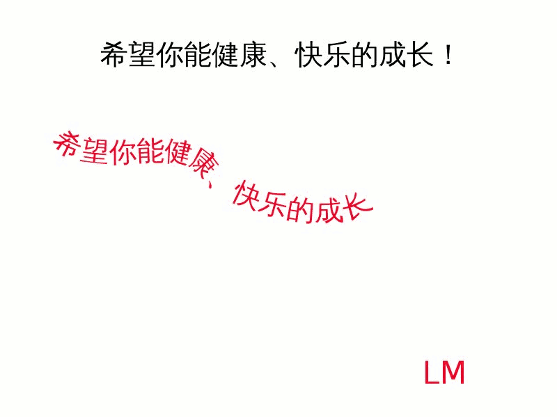

2011-2012 第二学期八年级图像处理教学设计
作者：TeliuTe 来源：基础教程网
二十八、学会路径工具 返回目录 下一课
（一）教学设计
1、学习目标：学会路径工具
2、注意事项：这节课是考试一下，算教师的考核成绩
3、教学过程：
1）教师准备学案和板书；
2）学生整队进入，开机抄黑板上笔记；
3）教师讲解板书演示操作；
4）学生打指法、日志、完成操作；
5）教师打勾记录学生指法成绩，检查日志和操作；
注：学生抄完笔记就开始打指法、日志，老师讲完后再继续完成；
（二）板书设计(学生笔记)
第28课 学会路径工具
1、路径：类似激光笔的光线或拉的直线绳
2、钢笔：两点(拖)一线，
3、路径面板：路径到选区
4、文本工具，路径，“图层、文字对齐路径”
5、路径到选区(路径面板)，新增图层(图层面板)、油漆桶
6、保存xcf和jpg
操作图示：

（三）课后记 2012-6-6 16:11
第一个班抽了十个人考核，在课本里抽了两道题
就是打开一幅图像上写一行字，然后再把它们擦掉
--
简单也有绕不过弯的，打开图像出错后面做着就乱
还有文字要转换成图像，要不擦不掉，这个没讲也不会了
--
学生学的还是浮躁，平时看着都会吵吵闹闹的
实际上自己一做就是另一回事了，适当考一下也有好处
--
找些练习题做一下，做不出来的可以发现是什么问题
要求独立完成，尽量不要让别人讲
--
路径还是有些绕弯，主要还是没认真听
估计光想着后面可以问，或者做不出来也没太大的问题
--
这样说来每节课后应该有个适当的点评，把学习的情况及时展示出来
要是能上传一个公共相册也好，论坛发帖可以做到，去年是这样的
--
要不就建一个论坛再，作为交作业？前面用相册
等熟悉了用论坛什么的，也可以试试
--
先把文字的曲线做出来，然后再把路径做成选区
再把选区喷上色即可，要绕两个弯
--
返回目录 下一课
本教程由86团学校TeliuTe制作|著作权所有
基础教程网：http://teliute.org/
美丽的校园……
转载和引用本站内容，请保留版权信息和本站链接。